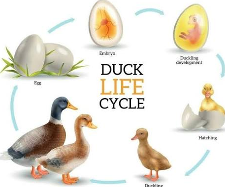

Egg
Age: Days 1–28
The duck grows inside the egg.
Ducks go through several stages as they grow.

Ducklings change quickly as they grow feathers and learn how to survive. The sections below show the main stages of a duck's life.
Age: Days 1–28
The duck grows inside the egg.
Age: Around day 28
The duckling breaks out of the egg.
Age: 1–3 weeks
The duckling begins walking and swimming.
Age: 3–7 weeks
The duckling grows and develops feathers.
Age: 7–16 weeks
The duck becomes more independent.
Age: 4–6 months
The duck finds food on its own.
Each stage helps the duck prepare for adult life. As ducks grow, they become stronger and more independent.
Read more about ducks